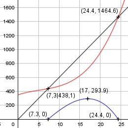
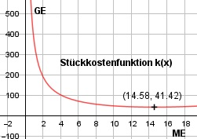

Aufgabe 86 Ein Händler verkauft ein Bauteil zu einem Preis von 60 €. Er arbeitet mit der Kostenfunktion K(x) = (1/8)x3 - 2x2 + 20x + 350. a) Berechnen Sie die Gewinnzone. b) Bei welcher verkauften Menge entsteht der maximale Gewinn? c) Bei welcher produzierten Menge hat er minimale Stückkosten? a) E(x) = 60x G(x) = 60x - ((1/8)x3 - 2x2 + 20x + 350) G(x) = - (1/8)x3 + 2x2 + 40x - 350 - (1/8)x3 + 2x2 + 40x - 350 = 0 |:-(1/8) x3 - 16x2 - 320x + 2 800 = 0 Newtonsches Näherungsverfahren: Wertetabelle: x 6 7 8 23 k'(x) 520 119 -272 -857 x 24 25 k'(x) -272 425 Vorzeichenwechsel zwischen 7 und 8, gewählt x01 = 7,3 Vorzeichenwechsel zwischen 24 und 25, gewählt x02 = 24,4 -(1/8)*7,33 + 2*7,32 + 40*7,3 - 350 x1 = 7,3 - ------------------------------------- -(3/8) * 7,32 + 4 * 7,3 + 40 x1 = 7,3 - (0) = 7,3 -(1/8)*24,43+2*24,42+40*24,4-350 x2 = 24,4 - ----------------------------------- -(3/8) * 24,42 + 4 * 24,4 + 40 x2 = 24,4 - (-0,01) = 24,41 gerundet 24,4 Gewinnzone zwischen 7,3 und 24,4 ME. b) G'(x) = -(3/8)x2 + 4x + 40 |*(-8) G'(x) = 3x2 - 32x - 320 G''(x) = - 0,75x + 4 3x2 - 32x - 320 = 0 A, B, C - Formel: A = 3, B = -32, C = -320 x1,2 = x1,2 = x1,2 = 32 ± 69,7 x1,2 = ------------ 6 x1 = 17 G(17) = - (1/8) * 173 + 2 * 172 + + 40 * 17 - 350 = 293,9 GE x2 = -6 keine Lösung G''(17) = - 0,75 * 17 + 4 < 0 --> Hochpunkt (17|293,9) Bei einer verkauften Menge von 17 entsteht der maximale Gewinn.

c) K(x) (1/8)x3 - 2x2 + 20x + 350 k(x) = ----- = --------------------------- x x 350 k(x) = (1/8)x2 - 2x + 20 + ----- x 350 k'(x) = 0,25x - 2 - ----- x2 700 k''(x) = 0,25 + ----- immer > 0 für alle x > 0 x3 350 0,25x - 2 - ----- = 0 |*x2 x2 0,25x3 - 2x2 - 350 = 0 Newtonsches Näherungsverfahren: Wertetabelle: x 13 14 15 16 k'(x) -0,82 -0,29 0,19 0,63 Vorzeichenwechsel zwischen 14 und 15, gewählt x01 = 14,6 350 0,25 * 14,6 - 2 - ------ 14,6 x1 = 14,6 - --------------------------- 700 0,25 + ------- 14,6 x1 = 14,6 - 0,02 = 14,58 350 k(14,58) = (1/8)* 14,582 - 2*14,58 + 20 + ------- 14,58 k(14,58) = 41,42 GE k''(14,58) > 0 --> Tiefpunkt (14,58|41,42) Bei einer Produktionsmenge von 14,58 ME sind die Stückkosten am niedrigsten und betragen 41,42 GE.